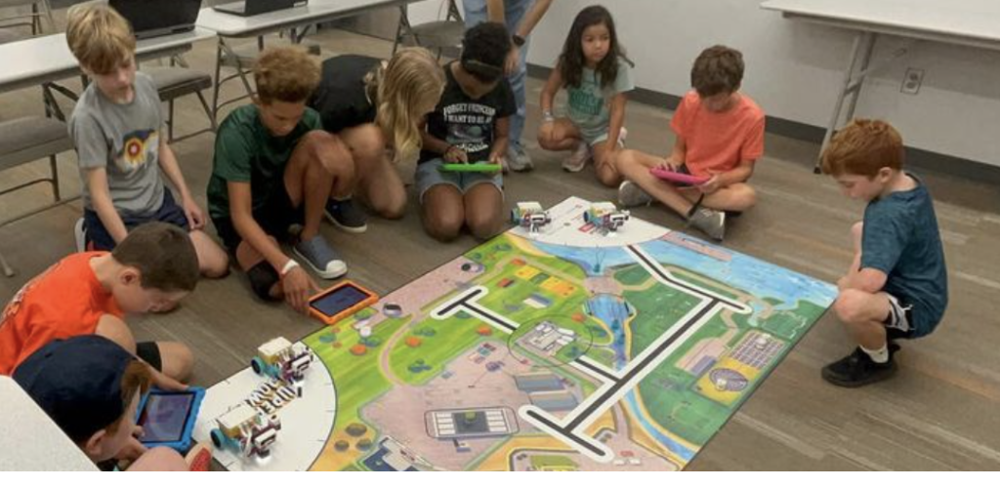
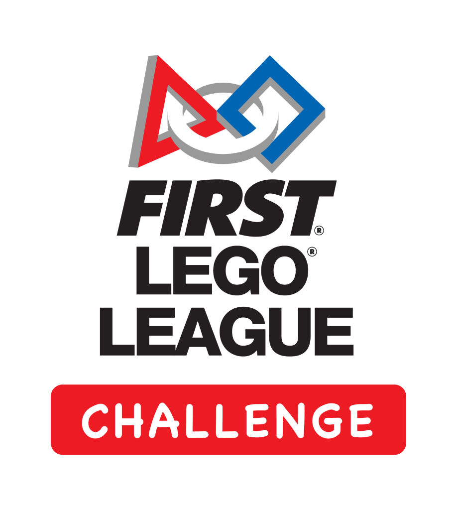
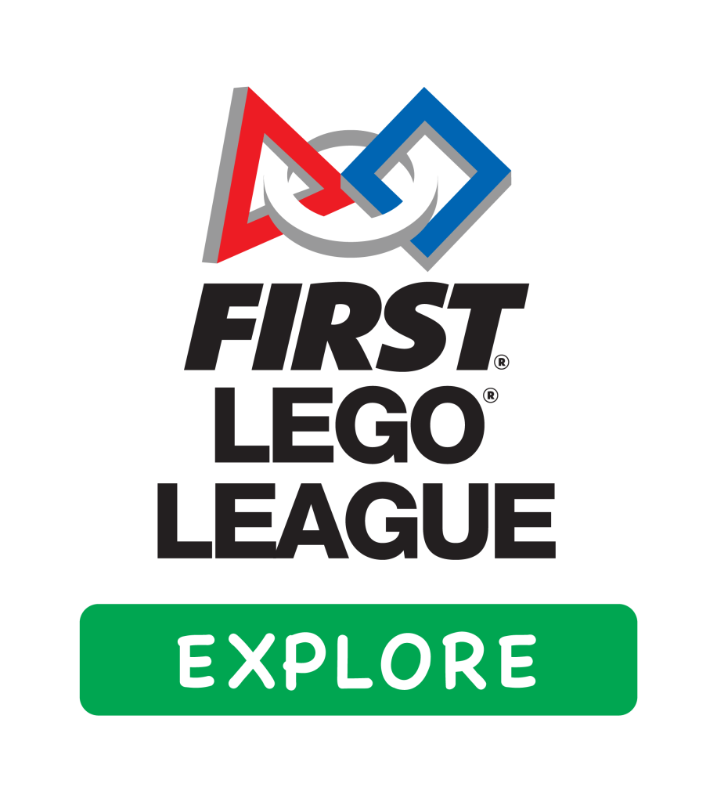

First Lego League


FIRST Lego League Challenge teams for 4th-8th graders are organized by interested parents or teachers and assisted by FRC & FTC students and mentors. Teams will meet 4-6 hours per week during Aug-Nov and occasionally during other parts of the year.

FIRST Lego League Explore teams for K-3rd graders are organized by interested parents or teachers and assisted by FRC & FTC students and mentors. Teams will meet 1-3 hours per week during Aug-Nov.
- Application does not guarantee placement on a team. We will only form as many teams as we have parents or other volunteers to help support them.
- Teams meet at various locations around Oklahoma County, determined by team coaches.
- Costs: 4-H fee ($25); team fee (should not exceed $50-$100, depends on availability of grants); parents are responsible for transportation to events